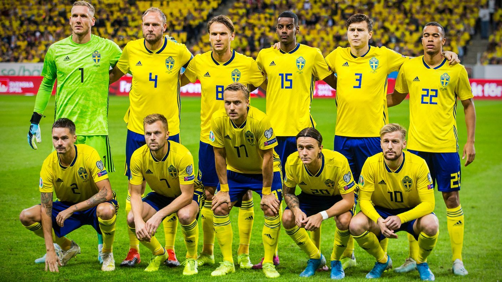

Jag gillar att kolla på sport men mest fotboll. Fotboll är ett av mina intressen då jag gillar att sporta ganska mycket. Utöver att sporta tycker jag om att spela tycker jag mycket om att spela datorspel och bräd spel. Jag gillar att få utmaningar och utmana mig själv och lära mig nya saker. Sveriges landslag är ett riktigt bra lag men mitt favorit lag kommer alltid vara Real Madrid. Jag spelar lite dator spel ibland men just nu kör jag mest minecraft eftersom att jag inte tycker något annat är så kul längre.
